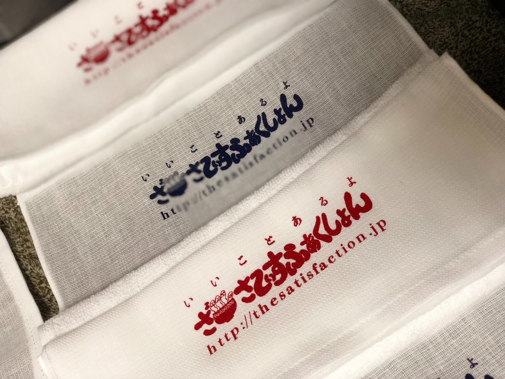
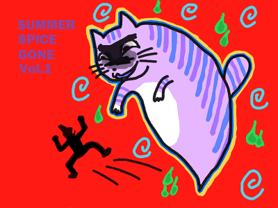

物販
※気になるものがございましらメールをお願いします。
音源/Tシャツ/その他/スプリット/VA/デモ
-音源-
「夢現小路」(CD)
[2019.04.10] KKV-80
3年半ぶりの単独音源。
全8曲入り、10年のバンド活動から近年起こった出来事まで感じられた全てを限られた時間の中で詰め込むべく録音。
KiliKiliVillaよりリリース。
1. ハイライト
2. zuguro
3. ふたりのロール
4. むげん
5. ティーンエイジ・ノックは続く
6. Band apart
7. 友達になれるかな
8. 銀河にねがいを
「はすe.p」(CASS+mp3)
[2015.09.02] IHST9 売り切れ
ライブ会場にて販売していました。soulmineでも売切れ。
I HATE SMOKE TAPESより、バンド初のカセットテープリリース。
[A面]
1. アゲイン
2. NOW HERE
3. 優男
4. KALK(in door)
5. イン・ザ・サマー
[B面]
1. マッチ
「京都e.p」(CD-R)
[2014.06.29] 500yen オモライズム-005
逆に、まれにライブ会場で販売中。
京都で開催されたＭＩＤＳＵＭＭＥＲ ＳＰＥＣＩＡＬ５への出演に合わせ製作。
1.ヒマニー
2.Uchibo-line
3.マトモになんかならなくてもイイぜ
4.opening
5.copie band
6.日常
「un epoch making ep」(CD-R)
[2012.03.20] 200yen オモライズム-001
ライブ会場、ディスクユニオンさんにて販売していました。
SHORT STORYディストロでも販売中！
バンドの三年間の集大成。
1.フォーザフューチャー
2.恋がしたい恋がした恋がしたい
3.黄昏ぺいぺい
4.CAMPUS LIFE
5.POPTEENS
6.NO OTHER AND NO PLAN
7.Shirotodotei
8.赤灯えれじい
9.下板橋フォーク
10.STRAY
11.男前ららばい
-Tシャツ-
【あしもとTシャツ】(T-SHIRT)[2019.4.5] 1500yen
久しぶりにTシャツ作りました！！
バックプリントのみ。
少し着古したような質感がかっこいいボディです。
色は白と黒(ペッパー)の二種。
サイズはM、L、XL。
刷りをお願いしたのはCAR10永井くんのSANPOU PRINTERS！
「まよなかＴ」(T-SHIRT)
[2017.10.9] 2000yen
音源は全く出ないけど、ひさびさに作ったTシャツ。
デザインは信頼のまよなかファンクラブスガヌマくんに依頼。最高なの出来ました。
全てスガヌマくんによる手刷り品です。(感謝)
ボディーはフルーツ、色とサイズ→白SMLXL、アッシュSML、黒SM、クリームSML、青SM
寝過ごして気がついたらこんなとこまで…彼女、怒ってるんだろうなあ。
「NEKOMEN Tシャツ」(T-SHIRT)
手刷り品
在庫なし。
デザインはHASHAG4WAYの表紙を描いたヒト。
「ミナコTシャツ」(T-SHIRT)
売り切れ 手刷り品
最後までゲームが好きな女でした。
-その他-
フェイスタオル
500yen
われわれの物販初の試みのタオルです！
これからの時期、銭湯行く時などにひょいと肩へぶら下げていってほしい。
かなりよさげな仕上がりです。
赤と紺。
刷りは心のアニキ、ちんよこ氏！！
クージー

400yen
1月の企画の時によこちんさんが作ってくれたクージー。
彩り新たに若干数増産していただきました！
刷りはもちろん心のアニキ、ちんよこ氏！！
-スプリット-
「MBV」(CD)[2018.2.3] 1000yen
鼓膜を突き刺す！魂のビート！！
男たちと男たちのドッキング。
フェイクまみれのこの国に、ワンカップ片手に突如現れた平成最期の爆裂派(無所属)！！
君のこれまでの音楽体験を変えないかもしれない。
マッハエスカルゴ企画の宮崎遠征に向けたTHE NOWHERESとのスプリット作品。
「SUMMER SPICE GONE VOL.1」(CDR)

売り切れ[2012.09.28] 100yen オモライズム-004
共同企画時に配布した、WORRY BOY GLORYとのSPLIT CDRです。
「HASHAG 4WAY」(CD-R)
[2012.06.29] 500yen オモライズム-003
各バンド、ライブ会場にて販売していました。
THE SATISFACTION,まちぶせ,ザ・ディディディディーズ,
WORRY BOY GLORYの4バンドによるスプリットアルバム。
タイトルは、「ハシャグフォーウェイ」と読み、
「はしゃぎたくてもはしゃげないだけどはしゃぎたいんだ僕らは」という思いが詰まっている。らしい。
1.Hashag Song
2.友達になれるかな
3.夕焼け
4.つま恋坂
-VA-
「生き埋めVA1.5」(CDR)[2018.5.27] soldout
京都の生き埋めレコーズによるVAの第1.5段。
おなじく京都で開催されたサーキットイベント"いつまでも世界は…"の
生き埋めレコーズステージにて投げ銭した人がもらえた当日限定配布作品。
１曲目"クロオル"で参加していました。
「DIG UP THE NEW UNDERGROUND!」(CD)
[2012.12.30] 840yen IHSR-038
1.MATTER/Speechless
2.A.O.W/自由は殺された
3.4steps/KIWAMONO
4.SPARK!SOUND!SHOW!/Fat, go fast!
5.SUNN/グローイング アップ
6.yellow gang/GO FIGHT
7.NO/精神解放区
8.THE SATISFACTION/男前ららばい
9.neko!/Heroes Still Sing Inside
10.PITTY/DEFECTIVE PRODUCT
11.CLASICKS/爆発エクスプロージョン
12.APRIL FOOL/NO NUKES
13.PASTAFASTA feat.小春/SUMMER LETTER from 60s CHINA
14.HELLZAVIELLER JP with SOGE MADNESS/I LIKE SMOKE
15.ゆうなり/10p.m.op
16.BitterSweets/Hello
17.THE STEP WISE/My Aesthetic
18.PANIC QT'S/DO YOU CALL ME NERD
19.宇宙探検隊/YOKOSUKAネイビーブルー
20.MY SHOES MY CAP/NO MONDAY
21.SANHOSE/UP TO YOU
22.CRAZY CHAMELEON/Jolly Holiday
23.BALLON D'OR/ベルセルク
24.the sleeping aides&razorblades/Worst band ever
25.THE SPROUTS/ERASER HEAD
26.THE SENSATIONS/STAY YOUNG
27.SHORT STORY/peace girl
「V.A. Rock Society Anthology 2011-2012」(CD-R)
[2011.11.03] 0yen TAHAHA RECORD-001
1.かっ飛び純情/田中ヤコブ
2.いずれわかるさ/田中ヤコブ
3.泥濘唱歌/烏滑稽
4.ネコゼーマン/烏滑稽
5.STRAY/THE SATISFACTION
6.赤灯えれじい/THE SATISFACTION
7.Antenna/Noise Hiroba
8.Telegram 0075/Noise Hiroba
9.メイキュー/Theマスキャッツ
10.パノラマスケッチ/Theマスキャッツ
11.離婚ダンス（Divorce dance）/Zaiden
12.ハネムーン（Honeymoon）/Zaiden
13.深海の魚/Thinking Time
14.放射能/Thinking Time
15.893/ミントな僕ら
16.Hi-C,ORANGE/ミントな僕ら
17.テーマソング/アポカリプスナースステーション
18.TPP/アポカリプスナースステーション
19.I Am Nazi Punx(live)/Theコントルズ
20.Kill Me, Gang Of Four(live)/Theコントルズ
21.夕焼け/谷江俊岳
「V.A. カラフルタマシイ」(CD)
[2011.03.14] 1500yen Castle Records"爆音レコード" CBK-23003
01.PUNiK/FUCK THE HERO!!
02.Squidge Choeds/Whisky sky
03.NOT/SCREAM SO LOUD
04.我ヲ捨ツル/瞬間ニ歩ヲ
05.THE ERECTION/ミサイル
06.JERSEYDEVIL/I'm ME
07.MY FIRST KILLING/Internal Hatred
08.PALAISO/赤い花
09.THE JOES/ぷらいど
10.IV the Luckiest/RIOT
11.ヒズファスト/6.7.8.9.10.10
12.THE SATISFACTION/ナナセナナセ
13.THE CALLINGS/WORKING CLASS ALRIGHT
14.Bug Wall/堕ちてくる前に
15.dread lock fellow/2.0メガネ
16.スウェイオン/open your badbrain
「V.A. Rock Society Anthology 2010-2011」(CD-R)

[2010.11.01] 0yen TAHAHA RECORD-000 配布終了
1.滑稽/烏滑稽
2.会いたくない/烏滑稽
3.メロコア/THE Fighting Boys
4.田中さん/THE Fighting Boys
5.Kick Out The Underground/The コントルズ
6.Music Is Suck/The コントルズ
7.なんでもない僕と、なんでもある君～アイライクユー/広内遼太郎
8.街/広内遼太郎
9.あの娘は町の有名人/田中とまさたか
10.時代/田中ヤコブ
11.Cement/こわれもの
12.大家/海老沼
13.浴槽サテライト/海老沼
14.31kt/Noise Hiroba
15.CAMPUS LIFE/THE SATISFACTION
16.素人童貞/THE SATISFACTION
17.夜明け/Thinking Time
18.電車/Thinking Time
19.てんで性悪キューピッド/THE マスカッツ
20.ギミギミガールズバンドラブ/THE マスカッツ
21.夏のぬけがら/田中ヤコブ
-デモ-
「DEMO CD-R」(CD-R)[2010.11.19] 0yen soldout
1.ナナセナナセ
2.CAMPUS LIFE
「Today is the day!!!」(CD-R)
[2010.8.29] 0yen soldout
1.CAMPUS LIFE
2.ecology
3.POPTEENS
4.黄昏ぺいぺい